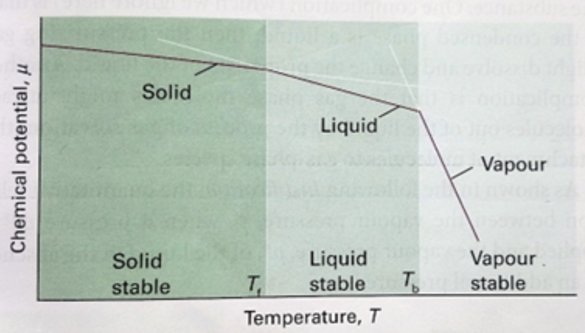
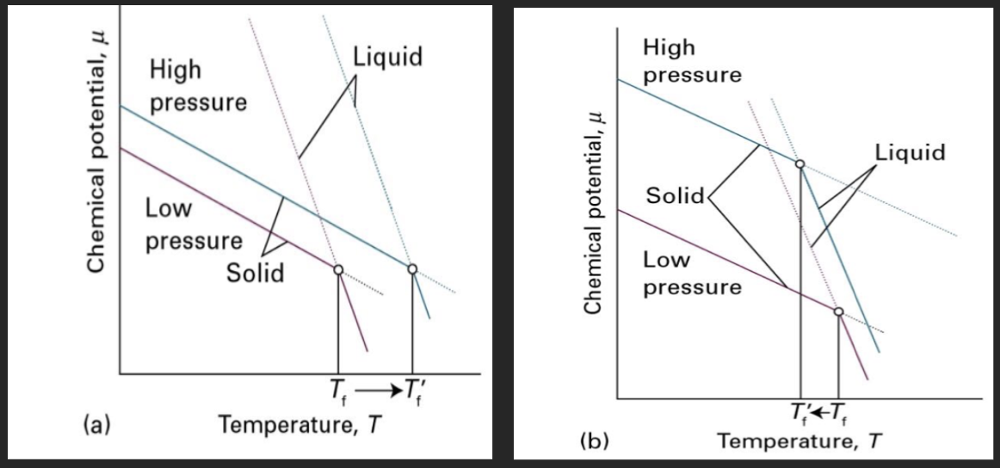
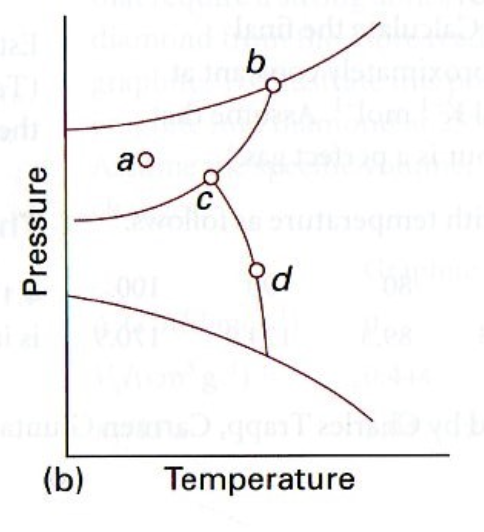
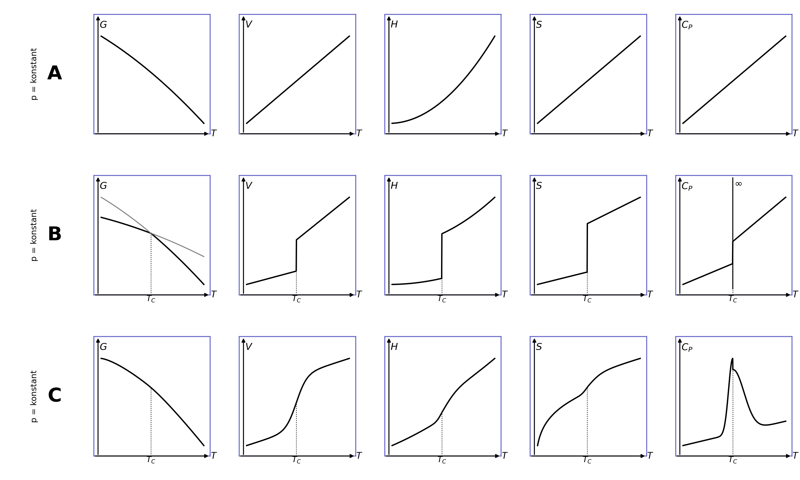

Uke 7 – Faser og faseoverganger#
Diskusjonsoppgaver#
Oppgave 1: Gibbs-energi og spontanitet.#
Forrige uke jobbet vi med Gibbs-energi og hvordan en minimering av den frie energien fører til en stabilisering av systemet. Nå skal vi, ved hjelp av entropibetraktninger ved konstant trykk og temperatur, undersøke hvorfor endringen i fri energi må være negativ, \(\Delta G<0\), for at en prosess skal være spontan.
a) Hva er uttrykket for endringen i Gibbs-energien, \(\Delta G\), ved konstant temperatur?
b) La oss repetere entropi og entalpi. Hvordan henger den totale entropiendringen, \(\Delta S_{\text{tot}}\), sammen med entropiendringene i systemet og omgivelsene, og hva kan vi si om \(\Delta S_{\text{tot}}\) for en spontan prosess? Hva er den klassiske definisjonen av entropi, og under hvilke betingelser kan vi skrive at \(q_{p,\text{sys}} = \Delta H_{\text{sys}}\)?
c) Et system er i termisk kontakt med omgivelsene, som kan betraktes som et stort varmereservoar med konstant temperatur \(T\). Hvordan kan vi uttrykke entropiendringen til omgivelsene, \(\Delta S_{\text{omg}}\), ved hjelp av systemets entalpiendring, \(\Delta H_{\text{sys}}\)? Anta konstant trykk og at systemet kun utfører pV-arbeid.
d) Sett svaret fra oppgave c) inn i uttrykket for den totale entropiendringen, og bruk det til å bestemme hvordan \(\Delta G\) avhenger av \(\Delta S_{\text{tot}}\).
Oppgave 2: Kjemisk potensial#
a) Hvordan definerer vi det kjemiske potensialet ut fra fundamentallikningen for Gibbs-energi, og hvordan kan vi tolke det?
b) Nå skal vi se nærmere på uttrykket for det kjemiske potensialet i et enkomponentsystem:
Her er \(V_m\) og \(S_m\) henholdsvis molart volum og molar entropi. Sammenhengen er nyttig når vi skal undersøke hvordan faseoverganger avhenger av trykk og temperatur. Den brukes også til å utlede Clapeyron-likningen, som beskriver hvordan likevektstrykket for en faseovergang endres med temperaturen. Men hvor kommer uttrykket fra?
Skriv opp fundamentallikningen for Gibbs-energien. Bruk deretter sammenhengen \(G=n\mu\) for et enkomponentsystem, og differensier den. Sett de to uttrykkene for \(dG\) lik hverandre, og vis at du får uttrykket for \(d\mu\) ovenfor.
c) Hvordan avhenger det kjemiske potensialet til et enkomponentsystem av temperaturen? Se på figuren, som viser kjemisk potensial som funksjon av temperatur ved konstant trykk. Hvorfor er kurvene ulike for fast stoff, væske og gass, og hva er stigningstallet til hver kurve? Ta utgangspunkt i definisjonen av \(d\mu\).

d) Hva betyr det i praksis at det kjemiske potensialet minker når temperaturen øker?
e) Hvordan avhenger det kjemiske potensialet av trykket ved konstant temperatur? Hvordan ser kurvene ut for gass, væske og fast stoff, og hvilken fase er stabil ved ulike trykk?
f) Se plottene av kjemisk potensial mot temperatur nedenfor. Forklar forskjellen mellom stoffene i plott a) og b), og gi et eksempel på et stoff som oppfører seg som i hvert plott.

Oppgave 3#
a) Hva er en fase?
b) Angi antall faser og frihetsgrader det er i hvert av punktene markert i figuren nedenfor.

c) Hva er en superkritisk væske?
d) Hva skjer med temperaturen under kontinuerlig oppvarming av vann når systemet når kokepunktet? Hvordan påvirker dette varmekapasiteten?
e) Hva er forskjellen mellom en første- og en andreordens faseovergang?
Svar Ved en førsteordens faseovergang er Gibbs-energien kontinuerlig, men dens første deriverte er diskontinuerlige. Siden \(S=-(\partial G/\partial T)_p\) og \(V=(\partial G/\partial p)_T\), innebærer dette et sprang i entropi og/eller volum. Overgangen har latent varme; ved konstant trykk er \(\Delta H_{\mathrm{tr}}=T\Delta S_{\mathrm{tr}}\).
f) Se på grafene og avgjør om det skjer en faseovergang, og om den i så fall er av første eller andre orden.

Regneoppgaver#
Oppgave 1#
a) Hvor mange faser er det i følgende systemer, og hvorfor?
En løsning med NaCl?
En blanding av is og vann (slush)?
𝐶𝑎𝐶𝑂3(𝑠)→𝐶𝑎𝑂(𝑠)+𝐶𝑂2(𝑔)
b) For de tre systemene i oppgave a, hvor mange komponenter er det i disse eksemplene? Angi så antall frihetsgrader, og hva frihetsgradene er for hvert system.
Oppgave 2#
Når en væske med molar masse \(46.1 \text{g mol}^{-1}\) fryser ved \(-3.65^{\circ}C\), endres tettheten fra \(0.789 \text{g cm}^{-3}\) til \(0.801 \text{g cm}^{-3}\). Den molare smelteentalpien til væsken er \(8.68 \text{kJ mol}^{-1}\). Estimer frysepunktet for væsken ved \(1 \text{MPa}\).
Oppgave 3#
Den molare fordampningsentalpien for vann ved \(100^{\circ}C\) er \(40.63 \text{kJ mol}^{-1}\). Finn arbeidet som utføres av systemet når \(2.00 \text{mol}\) vann fordamper ved \(100^{\circ}C\) og \(1.00 \text{atm}\) trykk. Finn også endringene i systemets indre energi \(\Delta U\), Gibbs-energi \(\Delta G\) og entropi \(\Delta S\). Tettheten for vann i væskeform ved \(100^{\circ}C\) er \(0.9584 \text{g cm}^{-3}\), og tettheten for vanndamp ved samme temperatur er \(0.000596\text{g cm}^{-3}\).
Oppgave 4#
Normalkokepunktet for etylenglykol (\(\text{C}_2\text{H}_6\text{O}_2\)) er \(197^{\circ}C\), og den spesifikke fordampningsentalpien er \(801 \text{J g}^{-1}\). Finn temperaturen der etylenglykol koker i et destillasjonsoppsett når trykket er \(50.0 \text{Torr}\)
Oppgave 5#
Nedenfor er det gitt data for hvordan den indre energien til et system varierer med temperatur i et system som undergår en faseovergang.
Temperatur (°C) |
35 |
40 |
45 |
50 |
51 |
51.5 |
51.6 |
55 |
60 |
|---|---|---|---|---|---|---|---|---|---|
Indre Energi (J) |
401 |
435 |
499 |
582 |
776 |
887 |
2012 |
2020 |
2031 |
Lag et skript for å finne ut ved hvilken temperatur faseovergangen skjer.
Hint: Husk det du har lært om numerisk derivasjon.